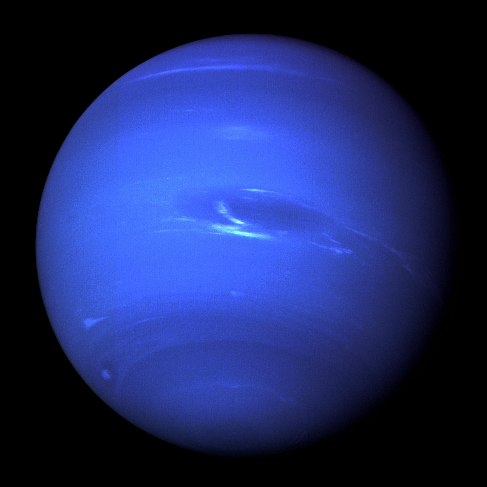

Discovery
Neptune was discovered September 23, 1846, by Johann Galle and Heinrich d'Arrest.
Neptune is the farthest planet from the Sun in our solar system.
Neptune orbits the sun at and average distance of 2.8 billion miles.

Neptune was discovered September 23, 1846, by Johann Galle and Heinrich d'Arrest.
Neptune is invisible to the naked eye due to its great distance from Earth.
Neptune and Uranus are often refered to as "twin planets" due to their similar size and composition.